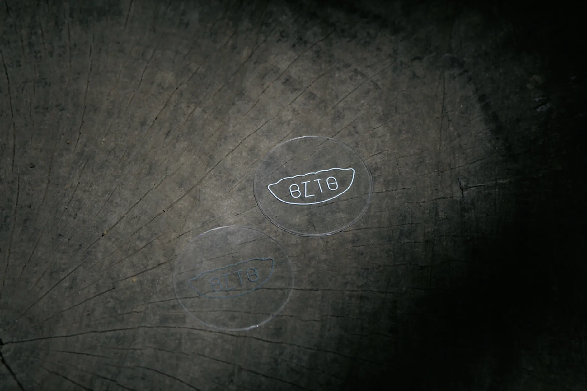

Z1-K2
このサイトを閲覧している、
8割以上の方が持っているのでは？というコレ。
そう「あの」びとちゃんステッカーですね。
このロゴの生みの親は高校の先輩、ザキさんといいます。
「BITO」の部分が顔のようになっており、
少し悲しげな表情にも見えるところや、
どこに貼っても馴染むシンプルなデザインが
とてもお気に入りです。
ロゴって、本当に難しいと思っているので
「餃子」と「名前」という
必要最低限、入れたい要素だけで、
ここまでしっくりくるデザインを作れるのは、
流石としか言いようがないです、凄すぎるよね。
好きなことを、趣味とするのか仕事とするのか
我々は何度も悩みここまで歩き続けていますが、
ザキさんは事実、こうしてひとりの人間の
人生に寄り添う作品を既に生み出していること。
それってかなり凄いことだし、
このステッカーを褒められるたびに、
ザキさんの高いデザイン力が世に認められるようで、
自分は嬉しく思っています。
最終的な目標は、
それぞれに繋がりの無い人同士が、
このステッカーを所持しており、
「それって、あの、びとちゃんの…？！」
という奇跡が世界のどこかで生じることです。
どうですか？
欲しくなってきたでしょう？
手渡しのみにはなりますが、
一生増刷し続ける予定なので、
未だ持っていない方も既に持っている方も、
欲しい方はいつでもお声がけください。
